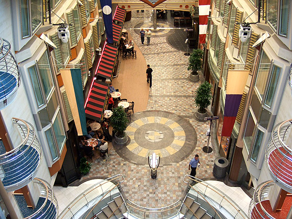
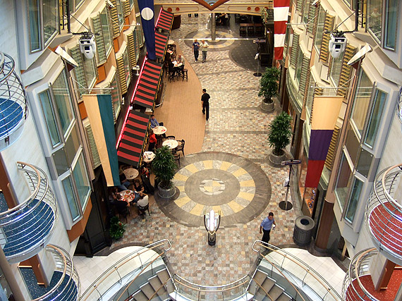
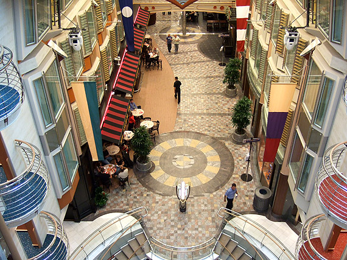

The sports court is a multi-purpose facility onboard Royal Caribbean ships that offer basketball, volleyball and tennis games. We've even seen dodgeball games on select cruises offered. It's the perfect place to get outside and join your fellow passengers and cruise staff in a game or two of sports fun. Games here can be pick up games or tournament style competitions. Check the Cruise Compass for what is scheduled but Royal Caribbean will provide all equipment needed to play. the ship’s spa and fitness complex is one of the biggest and best at sea, with a well-equipped oceanview gym, a huge aerobics studio, individual treatment rooms, and a 20-by-20-foot boxing ring where guests can train like fighters, using heavy bags, speed bags, and jump ropes. Outside, on Deck 12, the jogging track has stretch and fitness tips located at intervals along its length.
The sports court is a multi-purpose facility onboard Royal Caribbean ships that offer basketball, volleyball and tennis games. We've even seen dodgeball games on select cruises offered. It's the perfect place to get outside and join your fellow passengers and cruise staff in a game or two of sports fun. Games here can be pick up games or tournament style competitions.
The sports court is a multi-purpose facility onboard Royal Caribbean ships that offer basketball, volleyball and tennis games. We've even seen dodgeball games on select cruises offered. It's the perfect place to get outside and join your fellow passengers and cruise staff in a game or two of sports fun. Games here can be pick up games or tournament style competitions.
http://www.royalcaribbeanblog.com/2013/07/26/free-royal-caribbean-onboard-outdoor-activities
Royal Caribbean's Liberty of the Seas visits more than 100 ports of call in the Bahamas, Caribbean, Mediterranean and Europe. Liberty of the Seas and other Freedom class ships include surf parks, kids' H2O Zone water parks, Everlast boxing rings, flat screen TVs in every state room, Vitality Wellness programs and 15 percent more space than Voyager class ships. New with Liberty of the Seas came the Explorer Weddings program and additional outdoor seating for Sorrento's. The most noticable thing is the boxing ring, a first on a cruise ship with sister ship Freedom. There was actually an staff boxing instructor during our cruise. The ship's well-equipped gym still draws serious fitness buffs with its full range of state-of-the-art machines. The two-level Steiner Spa, with its winding staircase, looks more like the lobby of a boutique hotel, albeit with a Greek motif. It houses a small attractive thalassotherapy-like pool in an airy glass-enclosed but private semi-circular room. The Solarium's serene outdoor pool area nestles behind the spa; you're surrounded there by fountains, foliage, and statues, with a retractable glass ceiling overhead. A obvious addition to this class of ships are the cantilevered jacuzzi spas that actually hang over the sides of the ship. They look most dramatic from the outside than the inside, still, its an interesting novelty.

Liberty of the Seas is a Royal Caribbean International Freedom class cruise ship which entered regular service in May 2007. It was initially announced that she would be called Endeavour of the Seas, however this name was later changed.[3] The 15-deck ship accommodates 3,634 passengers served by 1,360 crew. She was built in 18 months at the Aker Finnyards drydock in Turku, Finland, where her sister ship, Freedom of the Seas, was also built. At gross tonnage (GT) of 154,407, she joined her sister ship, Freedom of the Seas, as the largest cruise ships and passenger vessels then ever built. She is 1,111.9 ft (338.91 m) long, 184 ft (56.08 m) wide, and cruises at 21.6-knot (40 km/h; 25 mph).On April 19, 2007, she was delivered to parent company Royal Caribbean Cruises Ltd.
With the Windjammer buffet complex, I found the logistical setup far more impressive than the food offerings; all the grub is centrally accessible with the seating encircling the perimeter of the space. You could easily make your way around, hit up the salad bar and pick through Jade's Asian choices (sweet and sour chicken, fried rice, rice crackers) before moving to the outsides to find a seat around the spacious, window-heavy arrangements. Even during heavy lunching periods, the crowds were never really an issue.
Liberty’s main drag is the Royal Promenade, a four-story horizontal atrium that stretches 445 feet down the ship’s center and is designed to resemble famous American entertainment streets like New Orleans’s Bourbon Street or Memphis’s Beale Street. Along its length, there’s an elegant champagne bar; a Ben & Jerry’s ice-cream shop; a 24-hour cafe; a pizzeria; six different shops; a comfortable English-style pub with seating inside or on the promenade itself; the cute little Cupcake Cupboard, serving fresh cupcakes at a la carte prices; and a Napa-style wine bar that offers wine-appreciation classes, tastings, and a chance to try dozens of vintages. Toward the bow, the Sphinx show lounge offers live music, dancing, and entertainment.